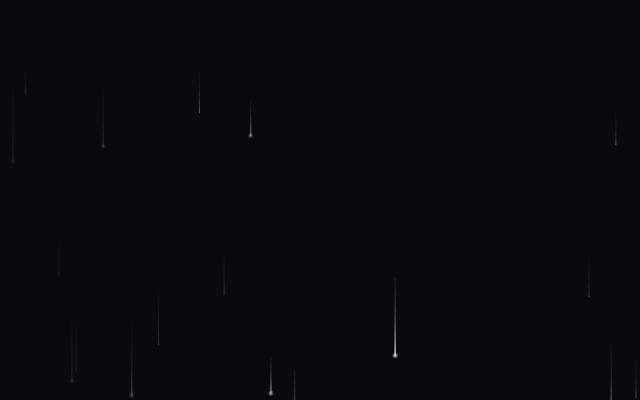
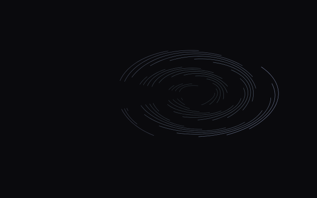
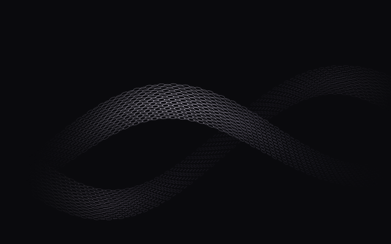
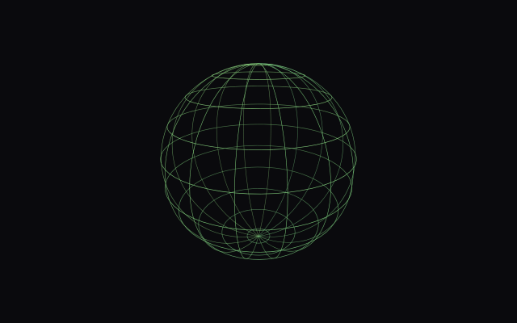

200°
200°
Generative backgrounds, shipped as one file.
Eighteen self-contained pieces. No framework, no bundler, no build step: open one, tune it, export it. Hover any specimen below to see it running live.
Wake
A pointer-trail overlay you attach to any canvas, separate from the eighteen pieces below.
Off by default, opt-in per canvas, never baked into an exported piece. Try it live and tune strength, trail life, strand count, and color.
open wake
200°
 35°
35°
 185°
185°
 265°
265°
 30°
30°
 190°
190°
 150°
150°
 75°
75°
 10°
10°
 220°
220°
 285°
285°

205°
198° 344°
344°
 42°
42°

250° 12°
12°

105°The skill that built this
Every constant that renders wrong, what counts as verifying a piece rather than reasoning about it, and the gate for judging a collection instead of one piece at a time. All of it learned by shipping work that looked right on paper and wrong on screen. Drop it into Claude Code and it loads when you build generative canvas work, here or anywhere else.
mkdir -p ~/.claude/skills/building-generative-backgrounds && \ curl -fsSL https://raw.githubusercontent.com/Classiccottrell/linefield/main/skills/building-generative-backgrounds/SKILL.md \ -o ~/.claude/skills/building-generative-backgrounds/SKILL.md